Leaderboard System Design
Real-Time Gaming Leaderboard
The target audience for this article falls into the following roles:
- Tech workers
- Students
- Engineering managers
The prerequisite to reading this article is fundamental knowledge of system design components. This article does not cover an in-depth guide on individual system design components.
Disclaimer: The system design questions are subjective. This article is written based on the research I have done on the topic and might differ from real-world implementations. Feel free to share your feedback and ask questions in the comments.
Download my system design playbook for free on newsletter signup:
What is a Leaderboard?
The leaderboard is a dashboard for displaying the ranking of the players in a competitive event such as an online multiplayer game. In the internet-connected world, leaderboards for popular games can be shared by millions of players. The players are assigned a score for the completion of tasks and the player with the highest score appears at the top of the leaderboard. The following are the benefits of having a leaderboard1:
- enhance social aspects of the game
- increase game activity
An example of a gaming leaderboard is the apex legends tracker.
Leaderboards are also useful in gamification in fitness, education, loyalty programs, or community participation. The following are the broad categories of leaderboards2:
-
Absolute leaderboard: ranks all players by a global measure. The top-ranked players such as the top 10 players are typically displayed by the absolute leaderboards.
-
Relative leaderboard: ranks players in such a way that players are grouped according to certain criteria. The surrounding ranked players of a particular player is displayed by the relative leaderboards.
Terminology
The following terminology might be helpful for you:
- Node: a server that provides functionality to other services
- Hash function: a mathematical function used to map data of arbitrary size to fixed-size values
- Data partitioning: a technique of distributing data across multiple nodes to improve the performance and scalability of the system
- Data replication: a technique of storing multiple copies of the same data on different nodes to improve the availability and durability of the system
- Hotspot: A performance-degraded node in a distributed system due to a large share of data storage and a high volume of retrieval or storage requests
- CDN: a group of geographically distributed servers that speed up the delivery of web content by bringing the content closer to the users
- API: a software intermediary that allows two applications or services to talk to each other
- Encryption: secure encoding of data using a key to protect the confidentiality of data
How does the Leaderboard work?
The Redis sorted set is the data type for the use cases and access patterns in the leaderboard requirements. The sorted set is an in-memory data type that makes it trivial to generate the leaderboard in real-time for millions of players. The current rank of the players can be fetched in logarithmic time. In simple words, the leaderboard is a set sorted by the score3, 4. The score and leaderboard records are persisted on the relational database as well to support complex queries.
Questions to ask the Interviewer
Candidate
- What are the primary use cases of the system?
- Are the clients distributed across the globe?
- What is the amount of Daily Active Users (DAU) for writes?
- What is the anticipated read: write ratio?
- Should the leaderboard be available in real-time?
Interviewer
- Update the score and display the leaderboard
- Yes
- 50 million DAU
- 5: 1
- Yes
Requirements
Functional Requirements
- The client (player) can view the top 10 players on the leaderboard in real-time (absolute leaderboard)
- The client can view a specific player’s rank and score
- The client can view the surrounding ranked players to a particular player (relative leaderboard)
- The client can receive score updates through push notifications
- The leaderboard can be configured for global, regional, and friend circles
- The client can view the historical game scores and historical leaderboards
- The leaderboards can rank players based on gameplay on a daily, weekly, or monthly basis
- The clients can update the leaderboard in a fully distributed manner across the globe
- The leaderboard should support thousands of concurrent players
Non-Functional Requirements
- High availability
- Low latency
- Scalability
- Reliability
- Minimal operational overhead
Leaderboard API
The components in the system expose the Application Programming Interface (API) endpoints through Representational State Transfer (REST) or Remote Procedure Call (RPC). The best practice to expose public APIs is through REST because of the loose coupling and the easiness to debug. Once the services harden and performance should be tuned further, switch to RPC for internal communications between services. The tradeoffs of RPC are tight coupling and difficulty in debugging 5, 6.
The description of HTTP Request headers is the following:
| Header | Description |
|---|---|
| authorization | authorize your user account |
| content-encoding | compression type used by the data payload |
| method | HTTP Verb |
| content-type | type of data format (JSON or XML) |
| user-agent | use to identify the client for analytics |
The description of HTTP Response headers is the following:
| Header | Description |
|---|---|
| status code | shows if the request was successful |
| cache-control | set cache |
| content-encoding | compression type used by the payload |
| content-type | type of data format |
How to update the score of a player?
The client executes a Hypertext Transfer Protocol (HTTP) POST request to update the score of a player. The POST requests are not idempotent.
|
|
The server responds with status code 200 OK on success.
|
|
The server responds with status code 202 accepted for asynchronous processing of score updates.
|
|
The server responds with status code 400 bad request to indicate a failed request due to an invalid request payload by the client.
|
|
The client sees a status code 403 forbidden if the client has valid credentials but not sufficient privileges to act on the resource.
|
|
How to view a specific player’s rank and score?
The client executes an HTTP GET request to view a specific player’s rank and score. There is no request body for an HTTP GET request.
|
|
The server responds with status code 200 OK on success.
|
|
How to view the top 10 players on the leaderboard?
The client executes an HTTP GET request to view the top 10 players on the leaderboard.
|
|
The server responds with status code 200 OK on success.
|
|
How to identify the surrounding ranked players?
The client executes an HTTP GET request to view the surrounding ranked players of a player.
|
|
The server responds with status code 200 OK on success.
|
|
How to view the health of a service?
The client executes an HTTP HEAD request to view the health of a service.
|
|
The server responds with status code 200 OK on success.
|
|
The server responds with status code 500 Internal Error to signal a server failure.
|
|
Further system design learning resources
Download my system design playbook for free on newsletter signup:
Leaderboard data storage
The read: write ratio is 5: 1, so the leaderboard is a relatively write-heavy system. In other words, the dominant usage pattern is the client updating the score.
Leaderboard database schema design
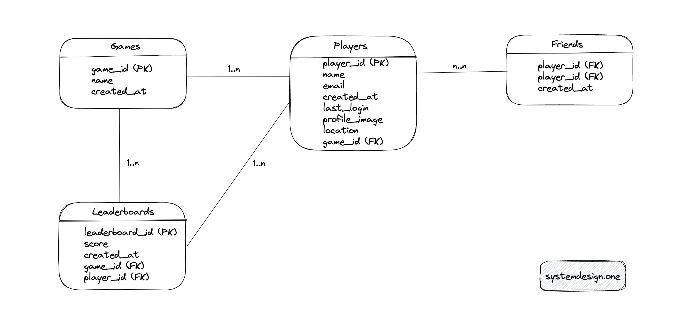
The major entities of the relational database are the Players table, the Games table, the Leaderboards table, and the Friends table. The relationship between the Games and the Players' tables is 1-to-many. The Friends table is an associative entity that defines the follower-followee relationship between players. The relationship between the Games and the Leaderboards tables is 1-to-many to support global, regional, and friend circles leaderboards. The relationship between the Players and Leaderboards tables is 1-to-many.
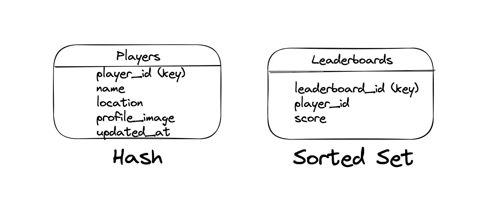
The major entities of the in-memory database (Redis) are Leaderboards and Players. The sorted sets data type in Redis is used to store the Leaderboards and the hash data type in Redis is used to store the metadata of the Players. The key of the sorted set is the leaderboard ID. The ID of the player is the key of the hash6.
Games table
| Column | Description |
|---|---|
| game_id | ID to identify the game |
| name | name of the game |
| created_at | creation timestamp |
Sample data of Games table
| game_id | name | created_at |
|---|---|---|
| 1 | apex legends | 2019-25-03 |
| 2 | minecraft | 2011-16-02 |
Players table
| Column | Description |
|---|---|
| player_id | ID to identify the player |
| name | name of the player |
| email of the player | |
| created_at | timestamp of player account creation |
| last_login | timestamp of last login by player |
| profile_image | object store URL where images are stored |
| location | region of the player |
| game_id (Foreign key) | game played by the player |
Sample data of Players table
| player_id | name | created_at | last_login | profile_image | location | game_id | |
|---|---|---|---|---|---|---|---|
| 41 | morty | morty@xyz.com | 2019-04-01 | 2019-04-01 | s3://url-image | canada | 1 |
| 42 | rick | rick@xyz.com | 2019-04-01 | 2019-04-01 | s3://url-image | canada | 1 |
Leaderboards table
| Column | Description |
|---|---|
| leaderboard_id | ID to identify the leaderboard |
| score | score of the player |
| created_at | timestamp of latest score update |
| game_id (Foreign key) | ID of the game |
| player_id (Foreign key) | ID of the player |
Sample data of Leaderboards table
| leaderboard_id | score | created_at | game_id | player_id |
|---|---|---|---|---|
| 01 | 125 | 2019-04-01 | 1 | 42 |
| 01 | 97 | 2019-04-01 | 1 | 41 |
Friends table
| Column | Description |
|---|---|
| player_id (Foreign key) | ID of the player |
| player_id (Foreign key) | ID of the player |
| created_at | timestamp |
Sample data of Friends table
| player_id | player_id | created_at |
|---|---|---|
| 41 | 42 | 2019-04-01 |
| 42 | 41 | 2019-04-01 |
Leaderboards Sorted Set (Redis)
| leaderboard_id | score | created_at | player_id |
|---|---|---|---|
| 01 | 125 | 2019-04-01 | 42 |
| 01 | 97 | 2019-04-01 | 41 |
| 01 | 91 | 2020-04-07 | 55 |
| 01 | 72 | 2021-07-01 | 67 |
SQL
Structured Query Language (SQL) is a domain-specific language used for managing data stored in a relational database management system6, 4,1.
Write a SQL query to insert a new player
|
|
Write a SQL query to update the score of a player
An entry is added to the leaderboards table when a player earns a score for performing some task.
|
|
Write a SQL query to fetch the total score of a player for the current month
|
|
Write a SQL query to calculate the scores and rank the top 10 players
|
|
Write a SQL query to calculate the rank of a specific player
|
|
Type of data store
The database should make it trivial to store and display the leaderboard data. The relational database or NoSQL data store can meet the requirements. The relational database is an optimal choice when the dataset is small. The relational database can be a suboptimal solution for the real-time leaderboard because of the scalability limitations for a million players due to the following reasons3, 7:
- computing the rank of a player requires the recomputation of the ranking of every player through a full table scan
- caching the read queries on the relational database for performance might result in stale leaderboard data
- query time can be slow when the count of players is in millions
- different tables should be joined based on the player ID to display the leaderboard on a normalized data schema
- a relational database that is not in memory will provide suboptimal performance for real-time updates on a large-scale list of records sorted by score due to disk seeks
The computation of the rank of a player requires a nested query in the relational database making the time complexity quadratic. The relational database can take on an average of 10 seconds to execute the query to compute the rank of a player on a table with 10 million records even with database indexes. The creation of database indexes on player_id and created_at columns will improve the read operations but slow down the write operations4. Besides, the result cannot be easily cached as the scores are constantly changing.
As long as the number of concurrent players in the game remains low to moderate (below 100 thousand), the relational database can provide sufficient leaderboard functionality. However, as the concurrent game access increases, the relational data schema becomes non-trivial to scale. The batch mode generation and result caching of the leaderboard reduce recurring computation impact at the expense of user experience6.
An in-memory database such as Redis can be used to build a scalable and performant real-time leaderboard. The sorted set data type in Redis offers in-memory and responsive access to the requirements of the leaderboard in logarithmic time complexity, O(log(n)), where n is the number of elements in the sorted set 8. The sorted set data type in Redis contains a set of items (players) with associated scores, which are used to rank the items in ascending order.
The sorted set data type in Redis automatically sorts the item based on the score during the upsert operations. The queries are significantly faster due to the presorting of items. On the contrary, the relational database sorts the items during the query time resulting in latency and adding further computational burden to the database. In summary, the Redis sorted sets can offer significant performance gains and also be a cost-efficient solution. The following are the benefits of using Redis for building the leaderboard6:
- frees up database resources to handle other types of requests
- supports a data structure optimized to handle leaderboard use cases
The metadata of the player such as the name of the player is required to display the leaderboard. The player ID is available in the sorted sets and the metadata of the player can be fetched from the relational database. The hash data type in Redis can cache the metadata of players for quick access to the metadata. The hash data type can hold multiple name-value pairs that are associated with a key. The drawback of the hash data type is that the hash consumes memory. Alternatively, the read replicas of the relational database can be queried to fetch the metadata.
A relational database such as PostgreSQL can be used for the persistent storage of the leaderboard data to support complex analytical queries. The profile images of the players can be stored in a managed object storage such as AWS S3.
Capacity Planning
The calculated numbers are approximations. The player-id can be a 30-character string consuming approximately 30 bytes. The score of a player can be a 16-bit integer consuming 2 bytes of storage.
Traffic
| Description | Value |
|---|---|
| DAU (write) | 50 million |
| QPS (write) | 600 |
| read: write | 5: 1 |
| QPS (read) | 3000 |
| peak QPS (read) | 3600 |
Memory
| Description | Calculation | Total |
|---|---|---|
| total player count | 70 million | |
| single record of a player | (30 + 2) bytes | 32 bytes |
| total storage for all players | 70 million * 32 bytes | 2.2 GB |
Storage
| Description | Calculation | Total |
|---|---|---|
| single record of a player | 32 bytes | |
| storage for a day | 50 million players/day * 32 bytes/player | 1600 MB |
| storage for 5 years | 1600 MB * 5 * 365 | 2.920 TB |
Bandwidth
Ingress is the network traffic that enters the server (client requests). Egress is the network traffic that exits the servers (server responses).
| Description | Calculation | Total |
|---|---|---|
| Ingress | 32 bytes/player * 50 million players/day * 10^(-5) day/sec | 16 KB/sec |
| Egress | 64 bytes/player * 250 million players/day * 10^(-5) day/sec | 160 KB/sec |
Capacity Planning Summary
| Description | Value |
|---|---|
| QPS (write) | 600 |
| QPS (read) | 3000 |
| Storage | 2.920 TB |
| Ingress | 16 KB/sec |
| Egress | 160 KB/sec |
| Memory | 2.2 GB |
Further system design learning resources
Download my system design playbook for free on newsletter signup:
Leaderboard high-level design
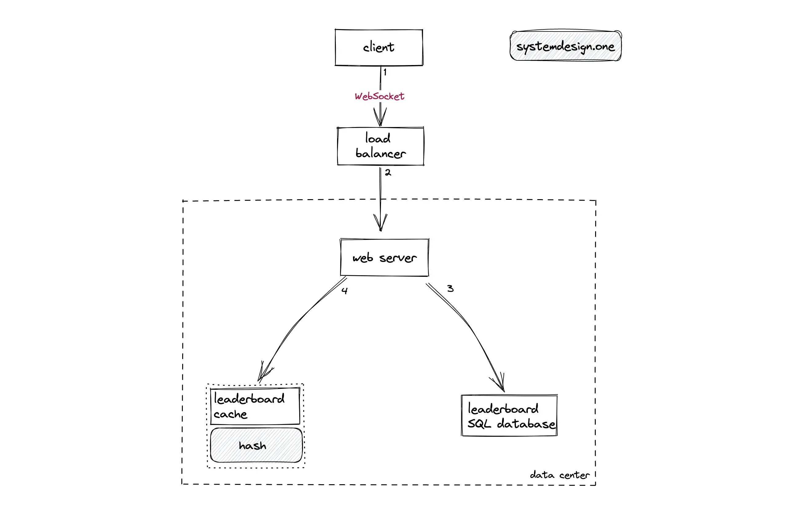
A small-scale leaderboard can leverage the cache-aside pattern on the caching layer for the relational database. The following operations are performed when a player updates the score9:
- The client creates a WebSocket connection to the load balancer for real-time communication
- The load balancer delegates the client’s request to the closest data center
- The server updates the player’s score record on the relational database following the cache-aside pattern
- The server updates the same player’s score record on the cache server following the cache-aside pattern
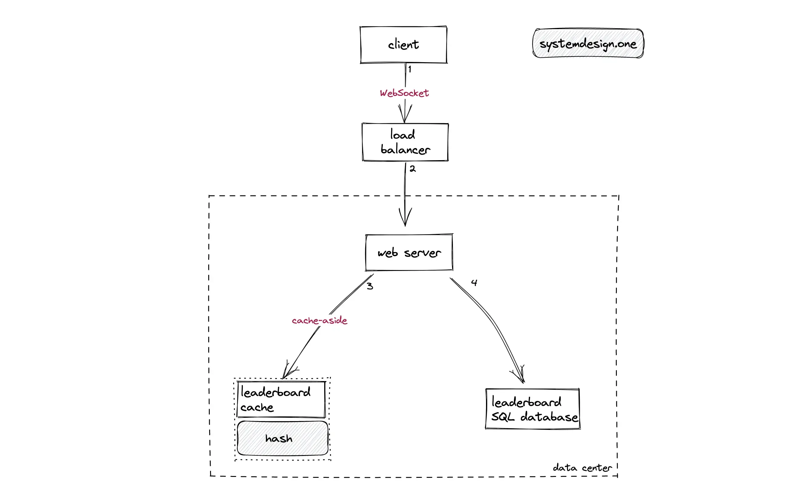
The following operations are performed when a player wants to view the leaderboard9:
- The client creates a WebSocket connection to the load balancer for real-time communication
- The load balancer delegates the client’s request to the closest data center
- The server queries the cache server to display the leaderboard
- The server queries the relational database on a cache miss and populates the cache server with fetched data
The leaderboard data is served directly from the cache server on a cache hit. The caching layer allows handling high spiky traffic with a low hardware footprint. The personalized leaderboards can make use of dedicated cache servers. The services can communicate with each other through RPC or REST. The server-sent events (SSE) or WebSockets can be used for real-time updates on the leaderboard10.
The sorted set is a unique collection of items (players) sorted based on the associated score. The hash data type on the cache server can be used to store the player metadata. The Least Recently Used (LRU) policy can be used for cache eviction. The time-to-live (TTL) based caching doesn’t meet the requirements of the leaderboard because the score changes are not time based but based on the game activity. The leaderboard will not be real-time with a TTL-based caching layer. The leaderboard can be configured with a low TTL cache for high accuracy but the request will be blocked until fresh data is fetched from the database. The high TTL cache doesn’t block the request but will return stale data 10.
In addition, the database will be hit with frequent access (thundering herd problem) due to the TTL-based caching layer when multiple cache servers expire simultaneously. The thundering herd problem can be resolved by adding a jitter on cache expiration. However, the addition of a jitter will result in stale leaderboard data for some clients. The cache push model can be used in a real-time leaderboard without the database becoming a bottleneck. The database changes are pushed directly to the cache servers using a database trigger 10. The technical challenges for a scalable real-time leaderboard are the following2:
- providing high availability on a real-time leaderboard
- enable players to receive notifications on leaderboard changes
- allow updates on the leaderboard in a fully distributed manner and support a global view of the leaderboard
- support massive scale across millions of players
- support computations on a large number of data attributes
NoSQL database for leaderboard
The NoSQL datastore such as Amazon DynamoDB can be used to build the leaderboard. The benefits of using DynamoDB are the following11:
- fully managed service
- serverless (no server to provision or manage)
- supports ACID transactions
- performance at scale through partitioning
- supports data change capture through the DynamoDB stream
The Global Secondary Index (GSI) in DynamoDB can be used for quick access to the leaderboard based on the score of the players. The GSI requires a sort key and a partition key. The sort key is the score of the players. The DynamoDB internally uses consistent hashing to partition the database for scalability. The database can be partitioned using the player-id as the partition key for uniform data distribution.
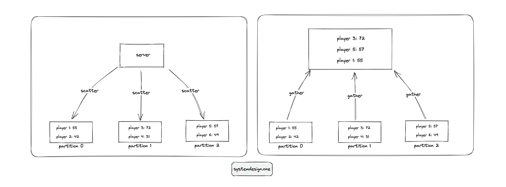
The records within each partition will be sorted by the score of the players. When the client requests to view the top 10 players on the leaderboard, separate queries (scatter) are executed to the database and the results are consolidated (gather) in the server to create the leaderboard. The database should be partitioned only if the traffic is too high for the GSI to handle because the partitioning increases the complexity11. The scores or ranking changes can be captured using DynamoDB streams 1. The limitations of using DynamoDB are the following:
- scatter-gather pattern increases complexity
- sorting the score can be relatively expensive
- not write optimized due to B-Trees managing data
How to update the score of a player on the leaderboard?
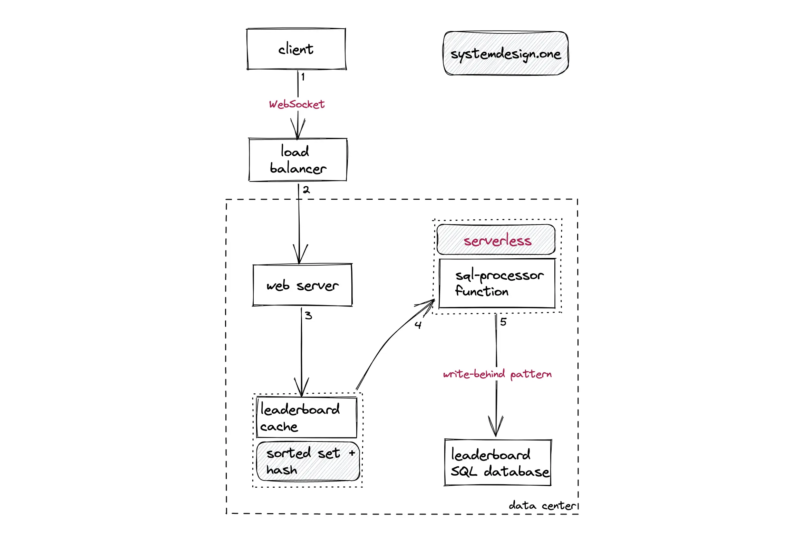
Web services can be substituted with serverless functions for minimal operational overhead. The cache server and relational database should be configured for active-active geo-replication to enable each data center to accept writes. A global load balancer can be provisioned to distribute the client requests. The stateless web server can be replicated across data centers for scalability12. The following operations are performed when a player updates the score:
- The client creates a WebSocket connection to the load balancer for real-time communication
- The load balancer delegates the client’s request to the closest data center
- The server updates the score on the sorted set data type in Redis
- The serverless function updates the records on the relational database using the write-behind cache pattern
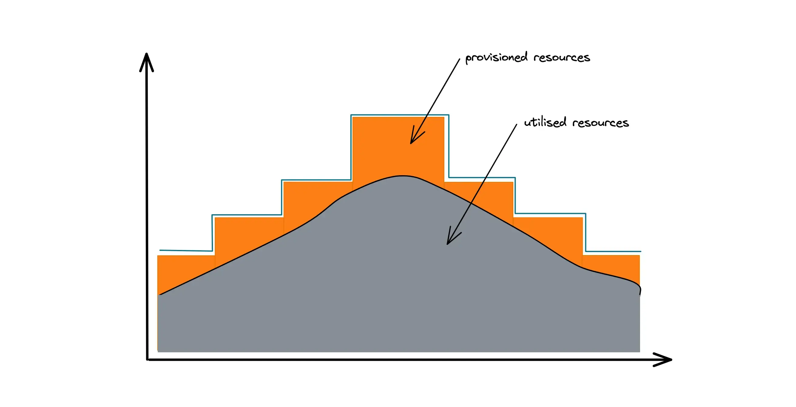
Autoscaling is often enabled by the over-provisioning of virtual machines and containers. As shown in Figure 7, an error budget is kept for autoscaling resulting in underutilization of CPU, network, and memory resources. The serverless functions are relatively more expensive than a virtual machine but fewer serverless function execution is required to meet the scalability requirement of the leaderboard. In layman’s terms, serverless functions enable 100 percent utilization of computing resources and keep the costs lower while running the leaderboard at a high scale13.
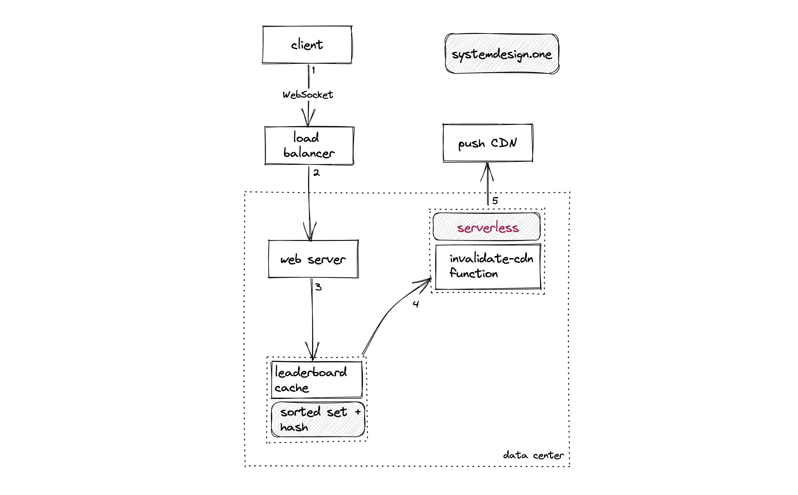
The score changes can be pushed asynchronously by the client to the server to improve the user experience14. The score changes are asynchronously persisted on the database and pushed to the cache servers for scalability. The leaderboard data schema can be denormalized for fast retrieval of the leaderboard10. The serverless functions can be used to trigger the score update on the cache server and CDN through an event-driven architecture13.
The asynchronous write-behind cache pattern can be used for scalability. As an alternative, the relational database can be partitioned to improve the write throughput and durability. The score update is written to the cache and subsequent read request is also redirected to the cache to fetch fresh data. The serverless functions can be used to implement the write-behind pattern and read-through pattern on the cache12. The following are the benefits of serverless functions:
- allows query invocation without having the burden to provision or manage the server
- enable autoscaling with minimal operational overhead
- charged by the execution time
The following are the limitations of serverless functions:
- slow
- restrictive
- relatively expensive
The popular data such as the leaderboard for the top 10 players are stored on a cross-region cache server for low latency. The leaderboard data is also persisted in the relational database for durability. The relational database supports complex analytics queries against the database follower replicas. The popular complex queries on the relational database can be cached for performance12, 8, 2, 3, 7, 6, 4.
redis> ZADD key score member
returns the number of elements added to the sorted set
redis> ZADD leaderboard 1 “one”
(integer) 1
redis> ZREM key member
returns the number of members removed from the sorted set
redis> ZADD leaderboard 1 “one”
(integer) 1
redis> ZREM leaderboard “one”
(integer) 1
redis> ZINCRBY key increment member
returns the new score of member
redis> ZADD leaderboard 1 “one”
(integer) 1
redis> ZINCRBY leaderboard 2 “one”
“3”
The key parameter is used to identify the leaderboard.
How to retrieve the leaderboard data?
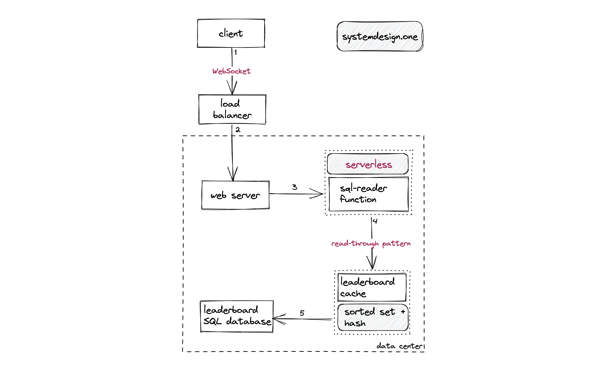
The following operations are performed when a player wants to view the leaderboard:
- The client creates a WebSocket connection to the load balancer for real-time communication
- The load balancer delegates the client’s request to the closest data center
- The serverless function invokes the sorted set data type in Redis
- The serverless function queries the relational database on a cache miss using the read-through cache pattern
The virtual machine and container are used instead of serverless functions for egress traffic management to enable granular control. An additional cache layer can be introduced in front of the database to prevent thundering herd problems13. The WebSocket connection is used to stream the changes on the leaderboard in real-time. The client can watch for specific leaderboards using a JavaScript rules engine on the client. A high-end web server can be provisioned to manage 100 thousand concurrent socket connections10.
The personalized leaderboard can store only the IDs to generate a personalization cache for saving memory. For instance, the personalization cache can store only the IDs of subscribed leaderboards instead of the leaderboard data10. In case of a tie, the player with an older timestamp wins the game. The timestamp of the score changes can be fetched from the Redis hash or the relational database15.
Further system design learning resources
Download my system design playbook for free on newsletter signup:
Design deep dive
How to view the top 10 players on the leaderboard?
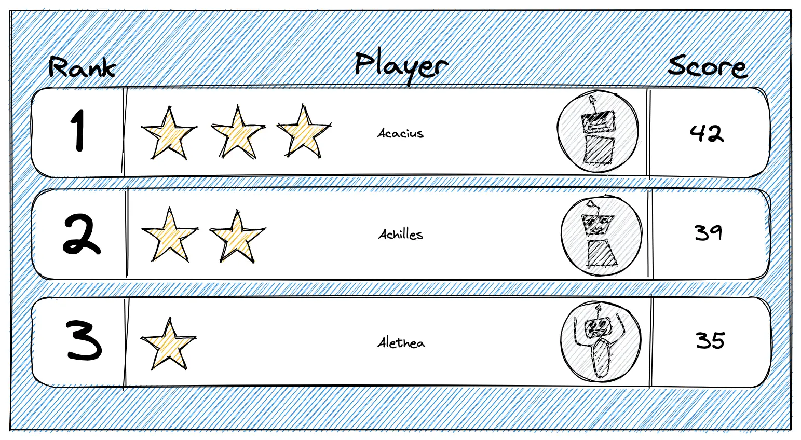
The server can fetch the top 10 players on the leaderboard from the sorted set data type through the execution of the zrevrange command. The hash data type on Redis can be queried using the HMGET command to fetch the list of the top 10 players' metadata through a single invocation.
redis> ZREVRANGE key start stop
returns the specified range of elements in the sorted set stored at key. The elements are considered to be ordered from the highest to the lowest score.
redis> ZADD leaderboard 1 “one”
(integer) 1
redis> ZADD leaderboard 2 “two”
(integer) 1
redis> ZADD leaderboard 3 “three”
(integer) 1
redis> ZADD leaderboard 4 “four”
(integer) 1
redis> ZREVRANGE leaderboard 0 2
-
“four”
-
“three”
-
“two”
The key parameter is used to identify the leaderboard. Any sorted set command that contains the keyword rev means reverse or descending order.
In the example, the zrevrange command was used to fetch the top 3 players using 0 and 2 as parameters. The zrevrange command can be used to fetch any range of the leaderboard with the same time complexity 16, 17, 18.
How to view a specific player’s rank and score?
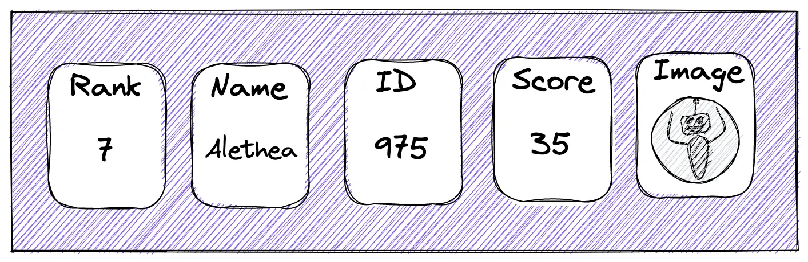
The server can fetch the rank and score of the player from the sorted set data type through the execution of zrevrank and zscore commands respectively. The hash data type on Redis can be queried to fetch the metadata of the player. The limitations on viewing the rank and score of a particular player are the following15, 8, 2, 3, 7, 6, 4:
- Intersection operation on hash and sorted set can be slightly expensive
- Lua script invocation on Redis can block the thread execution
redis> ZSCORE key member
returns the score of member in the sorted set at key
redis> ZADD leaderboard 3 “one”
(integer) 1
redis> ZSCORE leaderboard “one”
“3”
redis> ZREVRANK key member
returns the rank of member in the sorted set stored at key, with the scores ordered from high to low. The rank is 0-based, which means that the member with the highest score has rank 0.
redis> ZADD leaderboard 1 “one”
(integer) 1
redis> ZADD leaderboard 2 “two”
(integer) 1
redis> ZADD leaderboard 3 “three”
(integer) 1
redis> ZREVRANK leaderboard “one”
(integer) 2
The key parameter is used to identify the leaderboard. Any sorted set command that contains the keyword rev means reverse or descending order.
How to view the surrounding ranked players to a particular player?
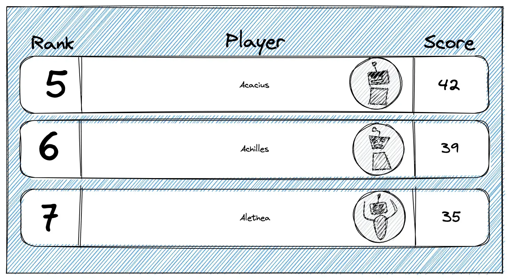
The relative leaderboard is used to improve player engagement. The player can see the other players who are ranked immediately higher or lower9. The following operations are executed to identify the surrounding ranked players of a particular player19, 8, 2, 3, 7, 6, 4:
- fetch the rank of a particular player using the zrevrank command
- execute the zrevrange command with range parameters +/- 5 of the player’s rank to fetch the surrounding 10 players
redis> ZREVRANK leaderboard “eleven”
(integer) 11
redis> ZREVRANGE leaderboard 8 14
-
“eight”
-
“nine”
-
“ten”
-
“eleven”
-
“twelve”
-
“thirteen”
-
“fourteen”
How to send score updates through push notifications?
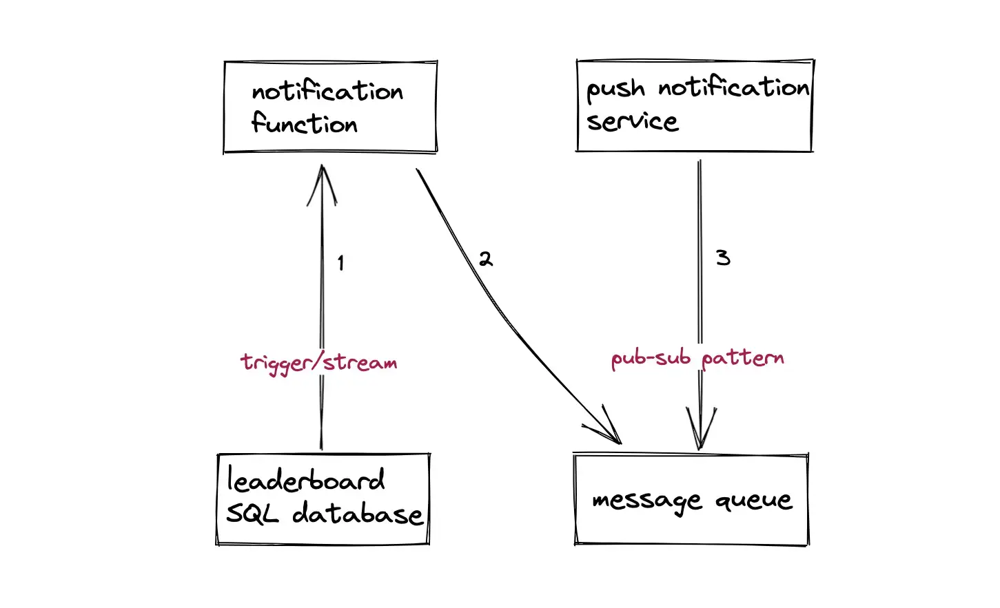
The database trigger or database change feed can be used to send push notifications to a player when the player’s score has been beaten by another player9. The database trigger can invoke the serverless function on ranking changes. The serverless function can write the ranking change data on the message queue for asynchronous processing and scalability. Bloom filter can be used to ensure that a player receives a notification on the ranking change only once by storing the player ID.
How to configure a global leaderboard?
Multiple sorted sets can be managed for distinct gaming scenarios. The global level sorted set can include the aggregated scores across all gaming scenarios. The zunionstore command can be used for union operations between sorted sets2.
How to view the historical leaderboards?
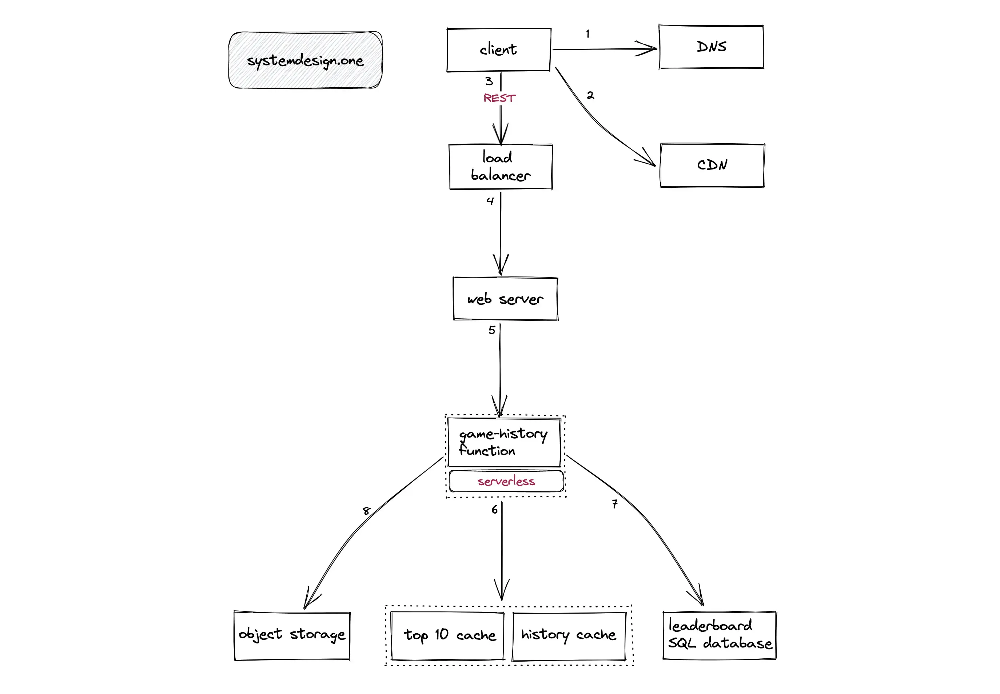
The completed games can switch to REST instead of WebSocket streaming 20. The historical leaderboard can leverage a long TTL cache for scalability10. The following operations are performed when a player wants to view the historical leaderboard:
- The client queries the DNS for identifying the closest data center
- The extremely popular leaderboards can be queried from the CDN cache
- The load balancer delegates the client’s request to a web server using the weighted-round robin algorithm
- The web server invokes the serverless function to fetch the historical leaderboard
- The serverless function queries the dedicated cache
- The serverless function queries the read replica of the relational database on a cache miss
- The profile image of the players can be fetched from the object storage
Redis Streams can be used to store historical leaderboard data with very low memory overhead. Redis Streams support range queries to paginate the historical leaderboard or check the games played at a given instant in the past 21.
How to configure leaderboards based on gameplay on a daily, weekly, or monthly basis?
A new sorted set for the leaderboard can be created for different time ranges (daily, weekly, or monthly). The (historical) sorted sets can be moved to cold storage for saving costs. The popular filters on the leaderboard can be precomputed for scalability.
How to configure the leaderboard for the friend circles?
The following operations are performed to configure the leaderboard for the friend circles15:
- keep the friend list as a sorted set initialized with zero values
- perform the intersection of the friend list sorted set with the leaderboard sorted set using the zinterstore command
Alternatively, the client can locally calculate the leaderboard for the friend circle by merging the friend list and global leaderboard to decrease the server load. The utilization of the client computing capacity and client caching allows scaling of the leaderboard for the friend circles proportional to the total count of players14.
Dedicated leaderboards can be configured for different gameplays. The front page can display a consolidated leaderboard. The load balancer will redirect the client to a specific leaderboard using the virtual IP address of the leaderboard10.
How to shard the leaderboard cache server?
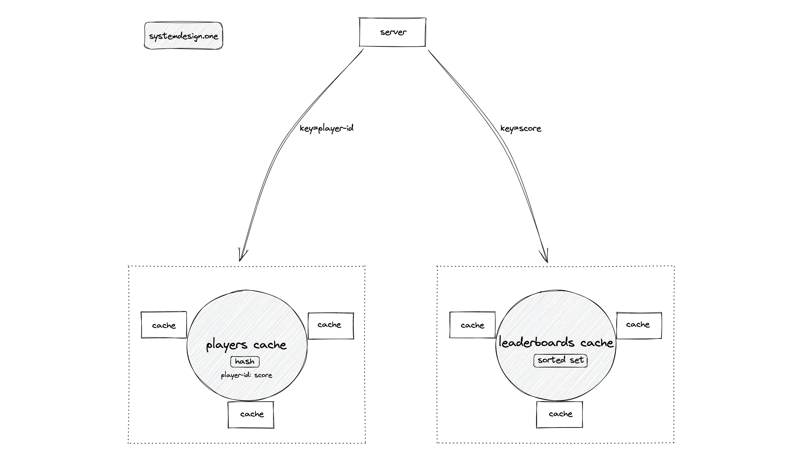
An extremely popular leaderboard can cause the daily QPS to exceed the threshold that a Redis node can handle. The Redis node should be partitioned for scalability. The leaderboards cache server can be partitioned by score as the shard (partition) key. The score is chosen as the shard key for supporting queries to fetch the top 10 players on the leaderboard and surrounding ranked players of a particular player. However, fetching the score and ranking of a specific player can be difficult to implement with the score as the shard key.
The players' metadata cache can be used to fetch the score of a specific player. The data schema (hash) of the players' metadata cache can be modified to include the score of the player as well. The hash data type stores the player-id as the key and the score as the value. The players' cache can be partitioned by player-id as the shard key. The caching layer with player-id as the shard key makes fetching the score and ranking of a specific player trivial. The following operations are executed to fetch the ranking of a player:
- The players' cache is queried to fetch the score of the player
- The leaderboards cache is queried with the fetched score to identify the ranking of a player
The potential partitioning schemes for the leaderboard are the following:
Redis cluster
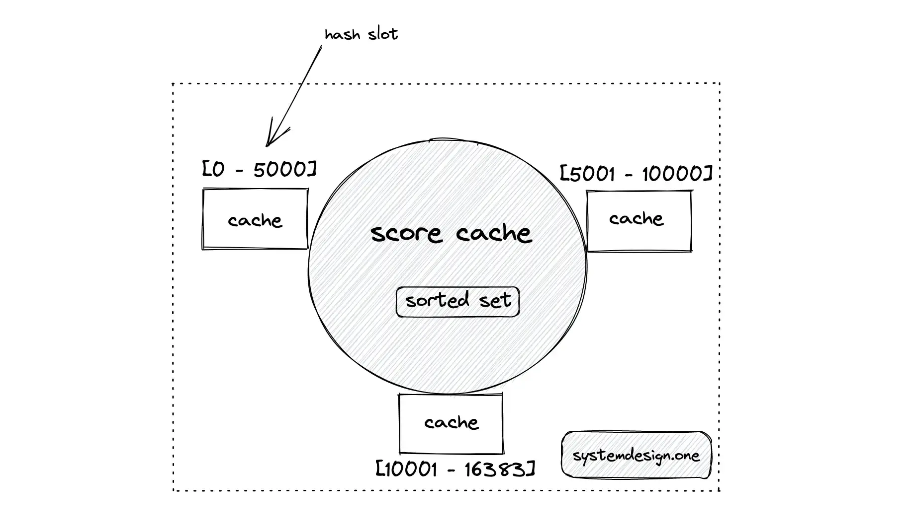
The Redis cluster can be used for the automatic partitioning of the cache server. The Redis cluster internally makes use of algorithmic sharding and hash slots to distribute the data. The Redis client can invoke the rebalance subcommand to redistribute the hash slots when a node is added or removed. The Redis client can invoke the reshard subcommand to ensure the contiguous distribution of data keys across nodes in the cluster at the expense of increased operational complexity. In addition, ensuring contiguous hash slots in the Redis cluster causes increased data movement when a node is added or removed, resulting in degraded performance22, 23.
Consistent hashing
Consistent hashing results in the non-contiguous distribution of data keys. The scatter-gather pattern can be used for calculating the rank and score of a player at the expense of read performance.
The player record should be removed and reinserted into the corresponding shard whenever the score changes to ensure data persistence in the correct shard. The rank of a player can be fetched by calculating the rank of the player in the shard and the boundary ranking values of other shards. The total count of items in the sorted set in a shard can be found by using the zcount command.
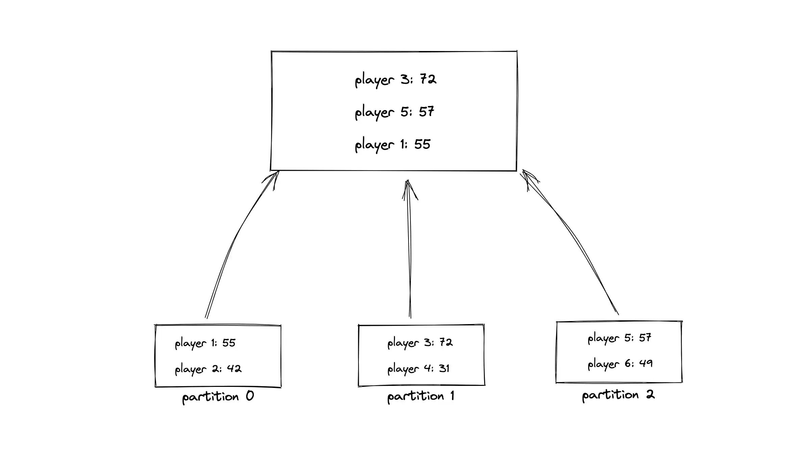
When the client requests to display the top 10 players on the leaderboard, the following operations are executed using the scatter-gather pattern:
- the server queries all the shards to fetch the top players on each shard
- the server merges the result
- the server sorts the result
The queries to the shards can be parallelized to improve the latency. However, the overall latency is the query time of the slowest shard. The popular shards (top 10 players) can be replicated through leader-follower topology to prevent hot spots. On top of that, auto-repartitioning can be triggered based on autoscaling alerts to handle increasing load6. The tradeoffs of each partitioning scheme are the following:
| Scheme | Tradeoff |
|---|---|
| range partitioning | increased data movement when the number of nodes changes |
| operational complexity | |
| modulus partitioning | increased data movement when the number of nodes changes |
| non-contiguous data distribution results in complex queries | |
| redis cluster | increased data movement when the number of nodes changes |
| operational complexity | |
| consistent hashing | non-contiguous data distribution results in complex queries |
| operational complexity |
How leaderboard handle massive concurrency?
The reverse proxy server can perform collapse forwarding on concurrent read requests to improve the read performance10. The single-threaded architecture of Redis makes it easy to handle concurrent score updates. The score update operation should be atomic. Additional ranking logic and capture of differential updates can be implemented using Lua scripting on Redis15.
The Redis implements multi-threading to accept network connections and write the command string into a memory buffer. The commands can be issued concurrently on Redis but the command execution is sequential. The Redis cache can be partitioned to overcome memory limitations. The latency in Redis is caused by network limitations and not by CPU24.
Redis sorted set explained
The sorted sets in Redis are a built-in data structure that makes it simple to create and modify the leaderboard2. The sorted set data type is a mapping between a key of type string and a score of type number. The key must be unique, and the score can be any number. The sorted set will store the total score of each player. The key of the sorted set is the player ID as the player ID is a unique field4. The time complexity of sorted set commands for the leaderboard are the following 16, 17, 18:
| Redis Command | Description | Time Complexity |
|---|---|---|
| ZADD | Add a new player | O(log(n)) |
| ZINCRBY | Increment the score of a player | O(log(n)) |
| ZSCORE | Fetch the score of a player | O(1) |
| ZREVRANK | Fetch the rank of a player | O(log(n)) |
| ZREVRANGE | Fetch the top m players on the leaderboard | O(log(n) + m) |
| ZREM | Remove a player from the leaderboard | O(k*log(n)) |
with n being the number of elements in the sorted set, k being the number of elements to be removed, and m the number of elements returned.
Redis sorted set implementation
The sorted sets in Redis are implemented internally as a dual data structure through the combination of hash and skip list. The hash maps players to scores while the skip list maps score to players. The players are sorted by the score. The skip list enables most operations with an average time complexity of O(log(n)). The source code of the Redis skip list can be found on github.com/redis 16, 17, 18.
The sorted set in Redis is optimized for small-size data sets by storing only hashes until a certain threshold size is exceeded. The scores in a sorted set are double 64-bit floating point numbers, which are sorted in ascending order. The redis sorted set breaks a score tie by default using the lexicographic ascending ordering of strings (player name).
High availability
The services (API, database) can be designed as degradable components for high availability. The degraded service should rate limit errors and throttle service usage to prevent latency and performance degradation in the whole system. The degraded service should be turned off in the worst case.
The services can be categorized as critical services and non-critical services based on the functional requirements. The non-critical services should be throttled during peak hours. Autoscaling should be enabled to handle the anticipated spikes in traffic25.
Low latency
The servers can be deployed in multiple availability zones within the same region to keep the servers closer to the client for improving latency. The asynchronous writes to the database on score changes and caching leaderboard data on the client, and CDN further improves the latency14.
The sorted set data type in Redis provides logarithmic time complexity on most operations resulting in low latency on most queries4. The popular filters on the leaderboard can be precomputed for scalability. Alternatively, the filters on the leaderboard can be computed on the client and cached to improve latency15.
The zrevrange command is used to fetch the top 10 players on the leaderboard. The zrevrange command execution takes O(log(n) + m) time complexity, where n is the number of items in the sorted set and m is the number of items returned. The time complexity of the zrevrange command can be linear in the worst case when the query returns the entire list of items on the leaderboard. The leaderboard data can be served in a paginated manner using the zrevrange command to improve the latency19.
Scalability
The caching layer is added for scaling read-heavy loads such as clients viewing the leaderboard. The write-heavy load of the leaderboard can be scaled by partitioning the data store or using an in-memory architecture25. The Redis node can handle 40 thousand QPS at peak load26. The data can be denormalized for faster read operations1. The read path and write path can be segregated to further improve the performance of the leaderboard25.
Reliability
A time series database such as Prometheus with a dashboard such as Grafana can be deployed to monitor the services and APIs. The internal caching layer can protect all services from the load10. The cache server should be check-pointed on disk for persistence and fault tolerance15. The cache server can be configured in the leader-follower topology for supporting failover. The snapshot of the relational database can be taken for increased reliability.
The API endpoints can enable TTL cache on the reverse proxy server and CDN for fault tolerance. The rate limiter can be configured for throttling the requests to the leaderboard10. The circuit breaker pattern can be used for improved fault tolerance. Set the replication factor of the storage layer to a value of at least three for improved durability and disaster recovery.
Minimal operational overhead
The operational overhead can be minimized by the following:
- run serverless functions
- configure fully managed services on the cloud
- enable autoscaling based on alerts
- configure monitoring
Security
The following actions can be taken to prevent fake score updates by malicious players and improve the security of the leaderboard9:
- encrypt the communication to prevent packet sniffing
- telemetry can be used on the server to detect anomalies in the score
- shadow ban the malicious player
- use JWT token for authorization
- rate limit the requests
- use the principle of least privilege
Summary
The relational database can be used to build a small-scale real-time leaderboard. However, an internet-scale real-time leaderboard requires an in-memory solution like sorted sets data type in Redis.
What to learn next?
Download my system design playbook for free on newsletter signup:
License
CC BY-NC-ND 4.0: This license allows reusers to copy and distribute the content in this article in any medium or format in unadapted form only, for noncommercial purposes, and only so long as attribution is given to the creator. The original article must be backlinked.
References
-
Kehinde Otubamowo, Kevin Leong, Scaling Real-time Gaming Leaderboards for Millions of Players (2021), youtube.com ↩︎
-
Real-time leaderboard & ranking solutions, redis.com ↩︎
-
How to take advantage of Redis just adding it to your stack (2011), oldblog.antirez.com ↩︎
-
Juan Manuel Villegas, How we created a real-time Leaderboard for a million Users (2020), levelup.gitconnected.com ↩︎
-
Dimitris-Ilias Gkanatsios, AzureFunctionsNodeLeaderboards Cosmos, GitHub.com ↩︎
-
Jan Michael Go Tan, Build a real-time gaming leaderboard with Amazon ElastiCache for Redis (2019), aws.amazon.com ↩︎
-
Sandeep Verma, Building a real-time Leaderboard with Redis (2019), medium.com ↩︎
-
Redis Sorted Sets Explained (2021), youtube.com ↩︎
-
Leaderboard Reference Architecture (2022), learn.microsoft.com ↩︎
-
Todd Hoff, ESPN’s Architecture At Scale - Operating At 100,000 Duh Nuh Nuhs Per Second (2013), highscalability.com ↩︎
-
Alex DeBrie, Leaderboard & Write Sharding, dynamodbguide.com ↩︎
-
How to build a real-time leaderboard for the Soccer World Cup with Azure SQL & Redis (2022), youtube.com ↩︎
-
Matthew Clark, BBC Online: Architecting for Scale with the Cloud and Serverless (2021), infoq.com ↩︎
-
Todd Hoff, Playfish’s Social Gaming Architecture - 50 Million Monthly Users And Growing (2010), highscalability.com ↩︎
-
Kamal Joshi, Redis: Swiss Army Knife (2019), slideshare.net ↩︎
-
Top Redis Use Cases by Core Data Structure Types (2019), scalegrid.io ↩︎
-
Introduction to Redis Data Structures: Sorted Sets (2016), scalegrid.io ↩︎
-
Redis sorted sets, redis.io ↩︎
-
Building Highly Concurrent, Low Latency Gaming System with Redis (2019), youtube.com ↩︎
-
Erdem Gunay, Real-Time Live Soccer Score Streaming Application Demo with Reactive Spring Stack (2020), infoq.com ↩︎
-
Antirez, Redis streams as a pure data structure, antirez.com ↩︎
-
Scaling with Redis Cluster, redis.io ↩︎
-
Clustering in Redis (2022), youtube.com ↩︎
-
Why is single threaded Redis so fast (2023), pixelstech.net ↩︎
-
Todd Hoff, How FarmVille Scales To Harvest 75 Million Players A Month (2010), highscalability.com ↩︎
-
Redis benchmark, redis.io ↩︎